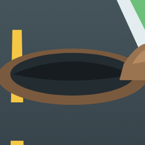
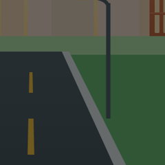
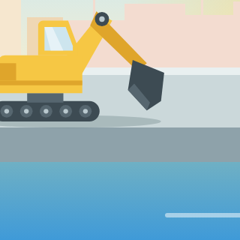

Lampas 30 araw
Kalsada, Aguinaldo Hwy
Brgy. Salitran II, Dasmariñas
65%Natapos
14Report
92Urgency
Sa madaling sabi
Lampas na ito sa nakapaskil na petsa. Maaaring may aprubadong dagdag na panahon, kaya tinitingnan pa ng LGU.
Halaga₱4,850,000
KontratistaSample Builders Inc.
SinimulanEne 15, 2026
Dapat mataposOkt 4, 2026
OpisinaSample District Office
Rekord2 sa 6 ang lampas
14 na report

jun_delacruzMay malaking bukas na hukay sa gilid ng kalsada at walang harang kaya delikado sa mga dumadaan, lalo na sa gabi.Nob 2
maria_sSobrang dilim dito tuwing gabi dahil walang ilaw ang bahaging ginagawa at hirap makita ang kalsada.Okt 26
ana.reyesIniwan ang makina sa tabi ng kalsada at walang harang o babala para sa mga naglalakad.Okt 21